01Day 1 · McLeodganj · 1,785 mkm 0.1
Little Lhasa
5kmFrom Dharamshala · By auto or taxi
McLeodganj, above Dharamshala, is known as "little Lhasa" for its Tibetan community. The trail starts from the edge of town.
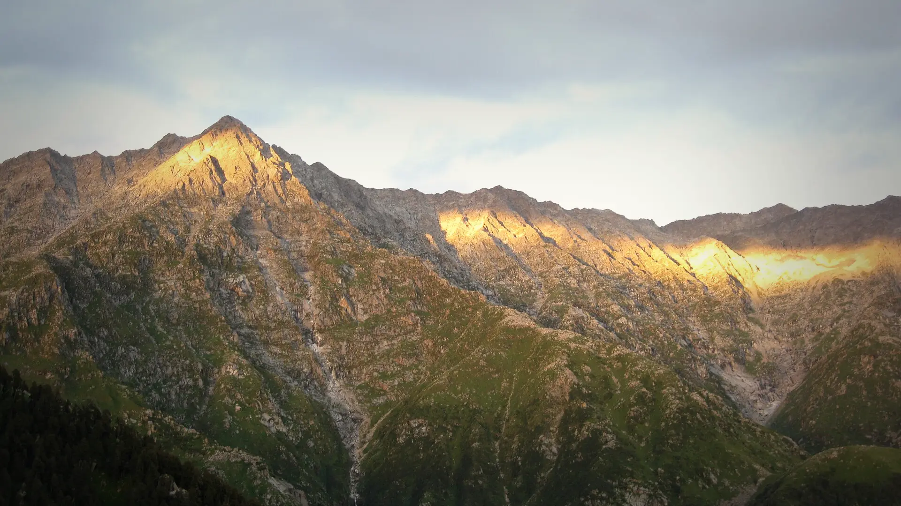
Photo: Ashish Gupta from Noida, India, CC BY 2.0त्रिउंड · Kangra, Himachal
The trek in one line, and what you can do with it.
Triund is an easy trek: one long climb to a ridge camp, then an extra morning up toward the snowline.
5 stops on the map, then the climb. Scroll the stops and the map follows.
01Day 1 · McLeodganj · 1,785 mkm 0.1
5kmFrom Dharamshala · By auto or taxi
McLeodganj, above Dharamshala, is known as "little Lhasa" for its Tibetan community. The trail starts from the edge of town.
01Day 1 · Galu Devi · about 2,100 mkm 2.3
2.3kmFrom town · On the mapped trail
The trail climbs out of town to the small Galu Devi temple, where the forest walk proper begins.
01Day 1 · Triund · 2,875 mkm 9.0
9kmToday · 3–5 h
The last climb is the "22 curves", steep switchbacks up to the grassy ridge of Triund at about 2,875 m.
02Day 2 · Lakakm 14.0
5kmFrom Triund · Via Snowline Cafe
A morning walk up past Snowline Cafe, about 2 km from Triund, and on to Laka below the Dhauladhar wall.
02Day 2 · McLeodganj · 1,785 mkm 27.9
19kmToday · 7–8 h in all
Back down past Triund and Galu Devi to McLeodganj, usually by 6 p.m.
Best in Mar–Jun, Sep–Nov.
Dark: the months the trek’s sources call its best. Mid: possible. See all treks in March.
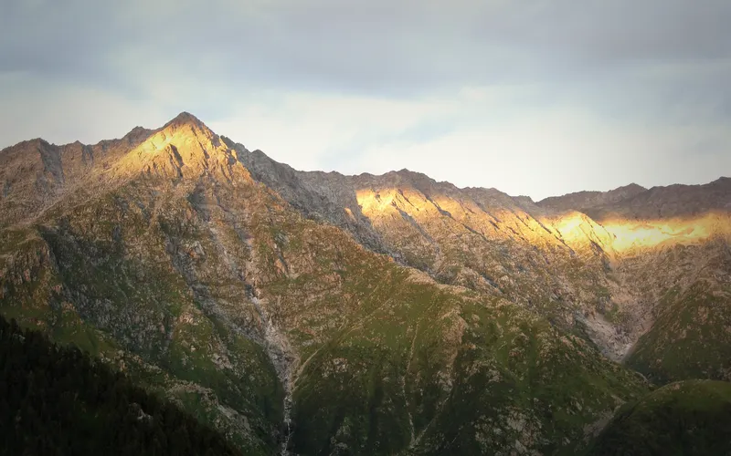
Photo: Ashish Gupta from Noida, India, CC BY 2.0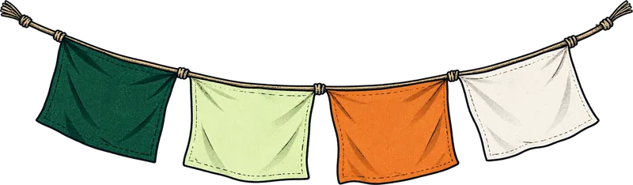
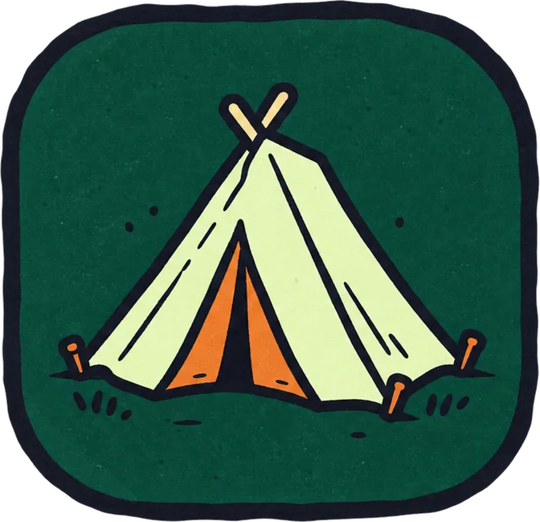
Base prices from 5 operators’ own pages, per person. GST and travel are often extra. Treqz sells nothing.
₹999–5,999
The practical things, then the questions people ask.
One thing from each part of the packing list, so nothing big is missed. The full list, with where to rent and the daily rates, is on the 3D page.
The full packing list →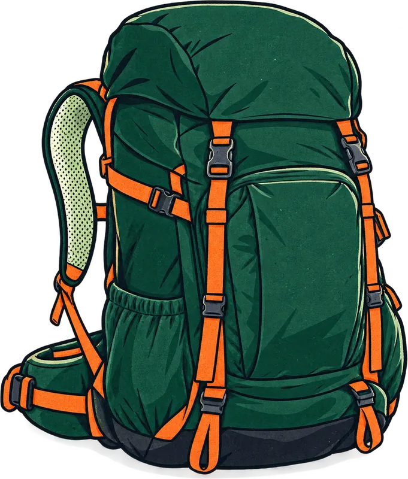
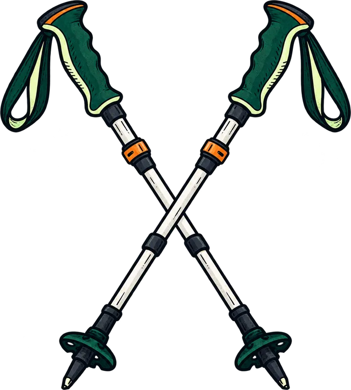
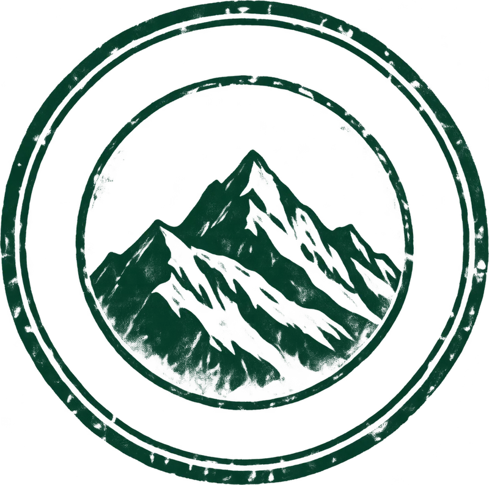
The last ATM is in McLeodganj. Draw cash there; other ATMs may not pay out.
Himalayan HikersJio and Vodafone work on parts of the trail. There is no signal at the top.
Himalaya ShelterRegister at the Gallu forest check post and pay the entry fee: ₹100 a day at the last reported rate. Only 40 people and 20 tents may stay on the ridge each night.
Treks and TrailsKangra's winter orders close the trail above 3,000 m, including Snowline Café and Laka. Triund itself can close on bad-weather days.
Treks and TrailsTea stalls line the forest section. Magic View Café, at about 2,400 m, is the usual tea stop.
Treks and TrailsAbout 28.0 km of walking over 2 days on the trail.
The highest point is 2,875 m, about 1,430 m above the start.
Its sources grade it Easy.
Mar–Jun, Sep–Nov. It is also possible in Dec–Feb.
₹999 to ₹5,999 per person: base prices from 5 operators' own pages. GST and travel are often extra.
Jio and Vodafone work on parts of the trail. There is no signal at the top.
Cars stop at Galu Devi temple, 6 km by road from McLeodganj, about 20 minutes by taxi. Or walk 3.5 km via Dharamkot.
Register at the Gallu forest check post and pay the entry fee: ₹100 a day at the last reported rate. Only 40 people and 20 tents may stay on the ridge each night.
The last ATM is in McLeodganj. Draw cash there; other ATMs may not pay out.
Warm jacket or fleece, Thermal innerwear, Quick-dry T-shirts, Trekking pants, Raincoat, Woollen cap and sun cap, Gloves, Extra socks. The full list is on the 3D page.
It is possible: its sources list Dec–Feb as workable, with snow and cold to plan for.
Its sources grade it Easy and it takes 2 days on the trail, with a highest point of 2,875 m.
Indrahar Pass, Kareri Lake, Beas Kund, Bhrigu Lake, Prashar Lake.
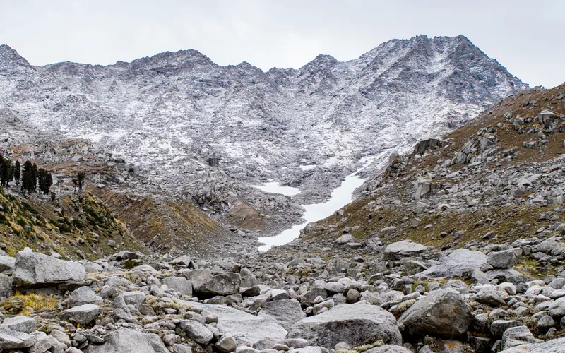
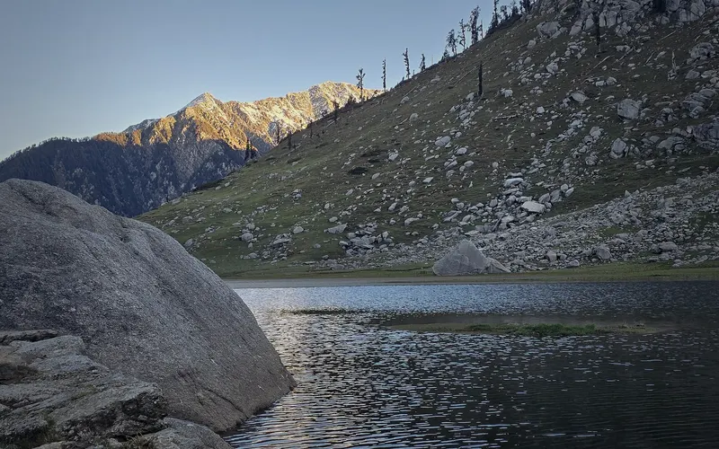
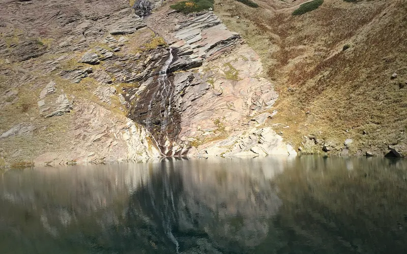
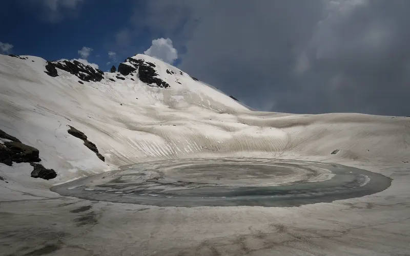
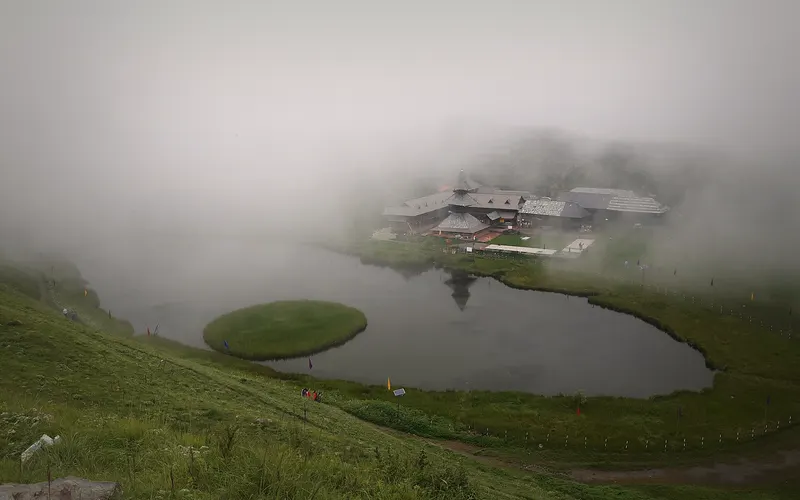
Treks in March · Treks in April · Treks in May · Treks in June · Treks in Himachal Pradesh · Beginner Treks in Himachal Pradesh · Easy Treks in India for Beginners · Weekend Treks in India (1–2 Days) · 2 Day Treks in India · Treks in Kangra, Himachal Pradesh · Triund vs Kareri Lake · Triund vs Nag Tibba · Triund vs Indrahar Pass · Triund vs Beas Kund · Free trek finder · All treks in 3D